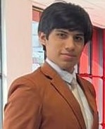
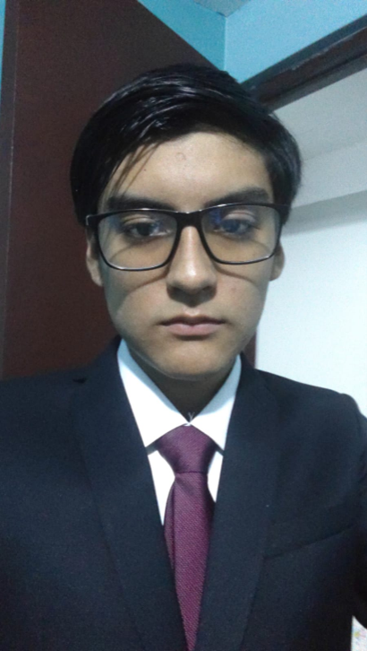
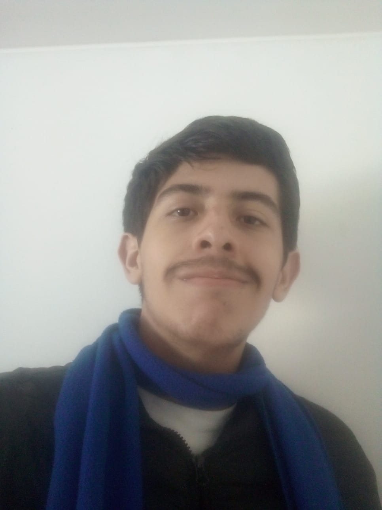
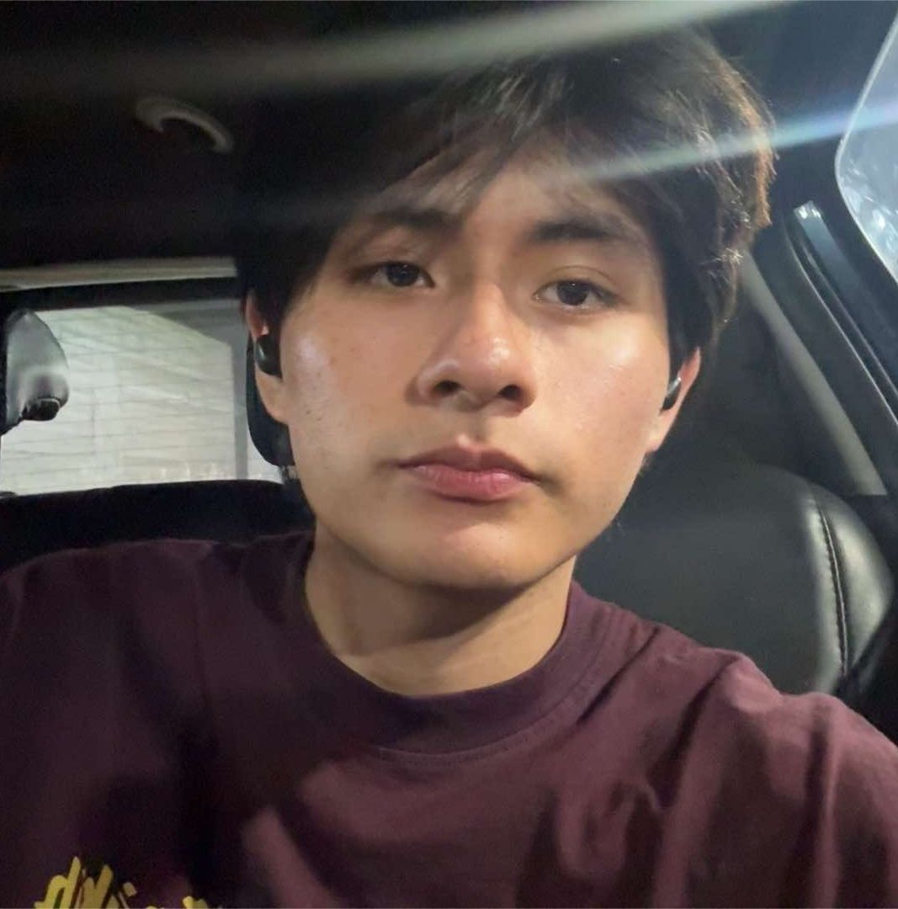

Inteligencia Hídrica para un Perú Sostenible
Monitoreo en tiempo real y gestión automatizada con IoT para cerrar la brecha de saneamiento. Transformamos datos complejos en decisiones operativas precisas.
Enfrentando el Desafío de la Brecha Hídrica
El Problema
Perú enfrenta una brecha de infraestructura de saneamiento estimada en 138,000 millones de soles. La falta de visibilidad operativa impide una gestión eficiente de los recursos existentes.
"La digitalización no es una opción, es la herramienta fundamental para democratizar el acceso al agua segura."
Aquanetix Centralize
Proporcionamos una capa de datos operativos centralizados que conecta la infraestructura física con los reguladores y EPS en tiempo real.
- check_circle Unificación de silos de información
- check_circle Alertas tempranas de contaminación
- check_circle Optimización de costos operativos
Capacidades del Ecosistema
Tecnología de punta diseñada específicamente para las condiciones geográficas y regulatorias del mercado peruano.
Monitoreo IoT
Recolección de datos de calidad del agua en tiempo real mediante sensores inteligentes de bajo consumo y alta precisión.
Cumplimiento Normativo
Reportes automáticos alineados a la Ley General del Ambiente, facilitando las auditorías y el cumplimiento de estándares nacionales.
Trazabilidad
Control total para EPS y reguladores, permitiendo auditar cada gota y proceso desde la captación hasta el consumo final.
Conoce al Equipo WebWarriors
Los creadores detrás de Aquanetix. Un equipo multidisciplinario enfocado en brindar soluciones tecnológicas para el Perú.

Nicolás Castro
Team Leader
Estudiante universitario y líder del equipo. Se encarga de coordinar el proyecto, organizar las tareas entre los integrantes y asegurar que todos los objetivos de nuestra entrega se cumplan a tiempo.

Sebastián Martín Pinedo Sánchez
Data Analyst / Investigador
Enfocado en el análisis de datos. Investiga y estructura la información del proyecto para validar los requerimientos de la solución hídrica.

Renzo Alejandro Bojórquez Bustinza
Desarrollador Backend / Infraestructura
Encargado de la lógica del servidor y las bases de datos para asegurar el funcionamiento correcto de la aplicación.
Leonardo Moises Cabrera Novoa
Diseñador UI/UX
Enfocado en el diseño de interfaces. Prototipa la plataforma para que sea intuitiva y cumpla con los estándares visuales.

Sebastian Josue Cochachi Chagua
Desarrollador Frontend
Enfocado en la construcción de la interfaz web con frameworks como Vue y Angular, apoyando en la integración IoT.
Conoce al Equipo WebWarriors
Los creadores detrás de Aquanetix. Un equipo multidisciplinario enfocado en brindar soluciones tecnológicas para el Perú.
¿Listo para transformar su gestión hídrica?
Únase a las organizaciones que ya están utilizando Aquanetix para construir un futuro más sostenible en el Perú.
Acceso al Dashboard